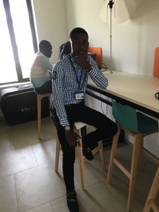

JOEL KALABAYO
Référent Digital
Adresse Domicile
N°121,Nganaketi, Q/Mfumunketu, C/Kimbanseke
joelkalabayo@yahoo.com
Téléphone
+243 819928095
Lieu et Date de Naissance
Kinshasa, le 31 mars 1995
Centres d'intérêts
La lecture, La Musique
Le Bénévolat, Le Sport
Présentation
Je suis Joel KALABAYO, Etudiant de Kinshasa Digital Academy; un amoureux de la Nouvelle Technologie de l'Information de la Communication
aime beaucoup appréndre des nouvelles technologie qui est base sur l'informatique et j'aime java scibe,phytho et autres .
Education
Janvier 2020: Référent Digital
2014-2015: Diplôme d'Etat en pédagogie géneral a l'institu kizutu
Expérience
Janvier 2017 a 2016. vilgarisateur a AIRTEL
2014-2015. Agent Commercial
2018-2019.Agent Logistique